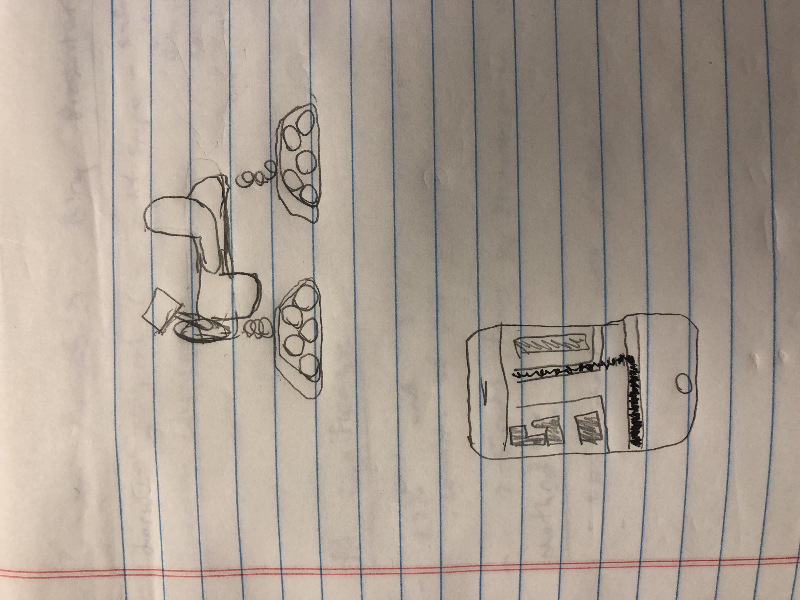
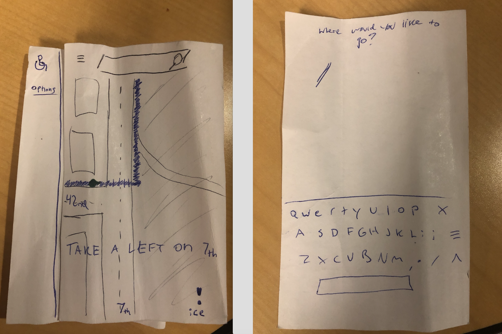
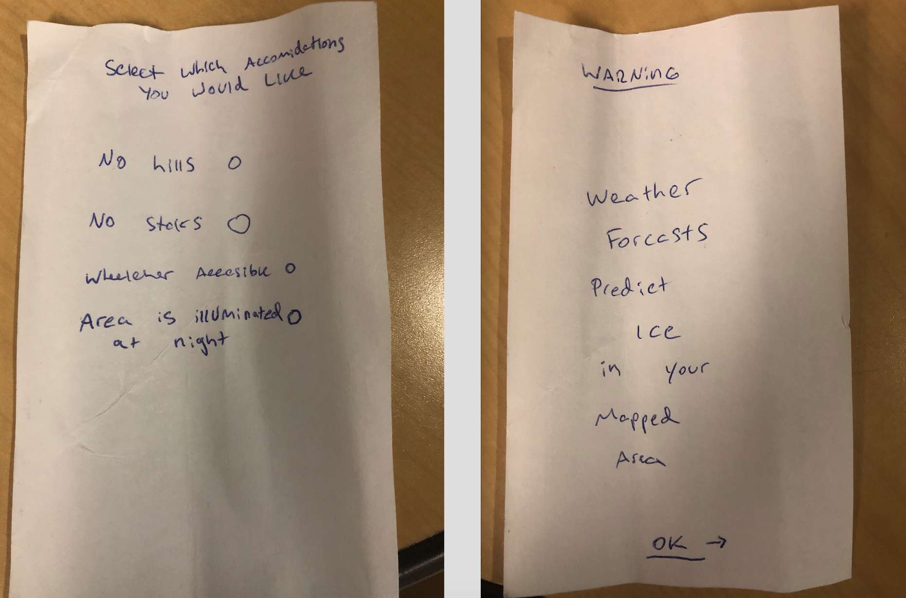
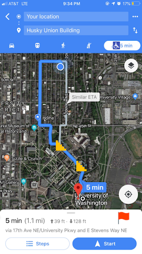
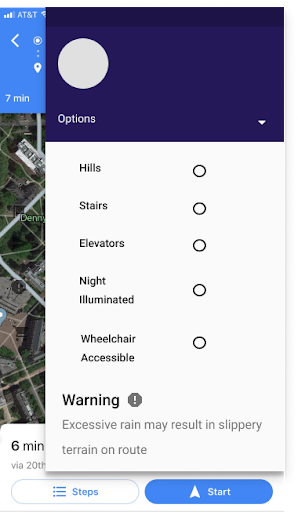
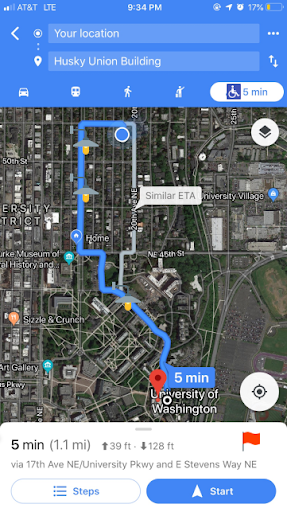
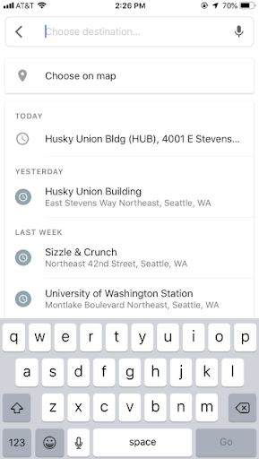

Take a look below to see how we designed an app to help make navigation equitable for wheelchair users
Problem:
There is a large population of users in america, wheelchairs (3.3 million) in the United States that do not have a reliable source of information on best pathways available to get from point a to point b. Wheelchair users struggle with hills, steps, non accessible restrooms, and other inconveniences that traditional mapping like google maps does not include in their pathways.
Proposition:
If we create a solution that gives wheelchair users access to a relieable source of information on wheelchair friendly routes, wheelchair users will have equal access to routing information and ways to get from point A to point B.
Design Process Insights:
After creating many ideas and sketches, we arrived at our best solutions to this problem including creating a hybrid wheelchair that carries a built in GPS with our software and it automated or a multi-platform application that allows a user to map a customized route depending on your accommodations for the best route possible.
After iterative critique, we chose to make a google map-layered feature because its an already popular and widely used navigational app. We chose to use the google option button to add route options that help people with different disabilities to make it easy for them to choose their own options for routing obstacles and options. We used a wheelchair icon for the added accessible transportation options on the google map direction layer because it is a symbol commonly known for accommodating disabled people.
 Extra design rationale and added functionality gained through interviews and critique includes the color of the route layout, blue indicates that people traffic is low to none, yellow indicates moderate pedestrian traffic and red highlights heavy pedestrian traffic. Accommodation options including hills, stairs, elevators, night illumination, and wheelchair accessibility are dotted with a circle option that can be pressed to darken indication to turn on the option and the same idea applies when turning it off. Warning message covers a large portion of screen to ensure the user to read it carefully and agree to move on by pressing the next button which is worded as got it. Finally a flag symbol to allow users to crowdsource data and add obstacles on the map to benefit others.
Final Solution:
   Design Limitations:
We recognize that our solution cannot serve everyone, and there are some limitations. This includes serving people who have other disabilities such as older people with walking canes or people with blindness. Furthermore, our app cannot notify users of unforeseeable obstacles such as construction, emergency responses, or spills on the route that could impair the users navigation. Last but not least, the app cannot be used effectively in rural areas, service is weak, maintenance wont be as strong, and crowd sourcing data for the obstacles is not as frequent.
What we learned throughout the process:
- Iteration and reworking allows for a better solution
- Be responsive to critique sessions. stay positive, people are trying to help you get better so listen and as questions.
- Step in the shoes of the user. interviewing and understanding as much as possible about the target population helps build a better product.
More Information on our Project:
Click here to visit our Report